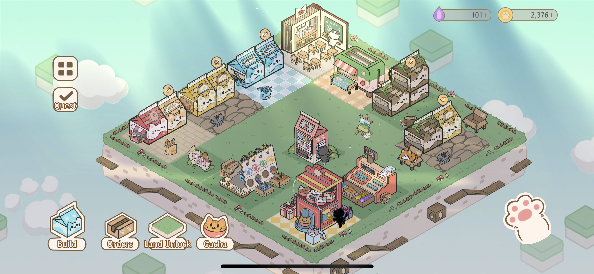
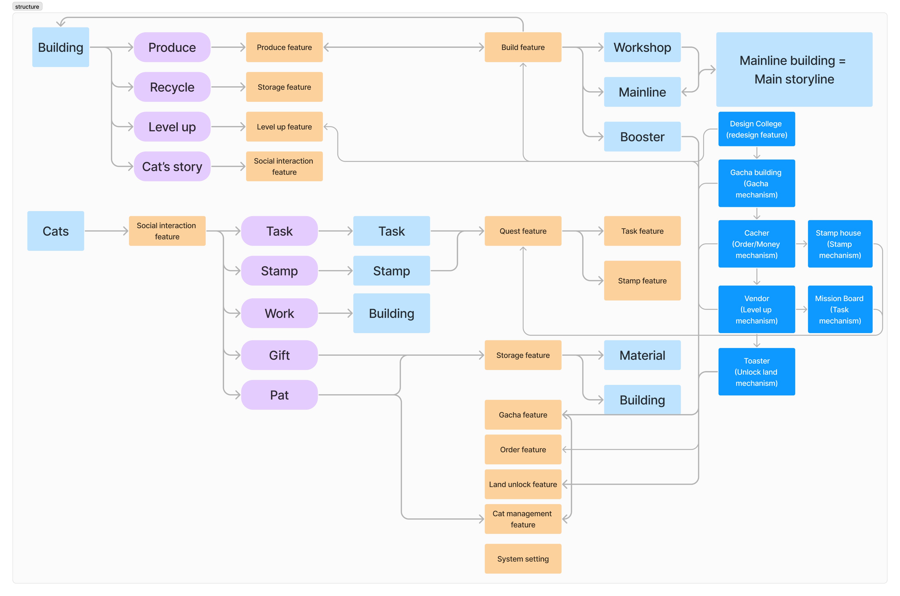
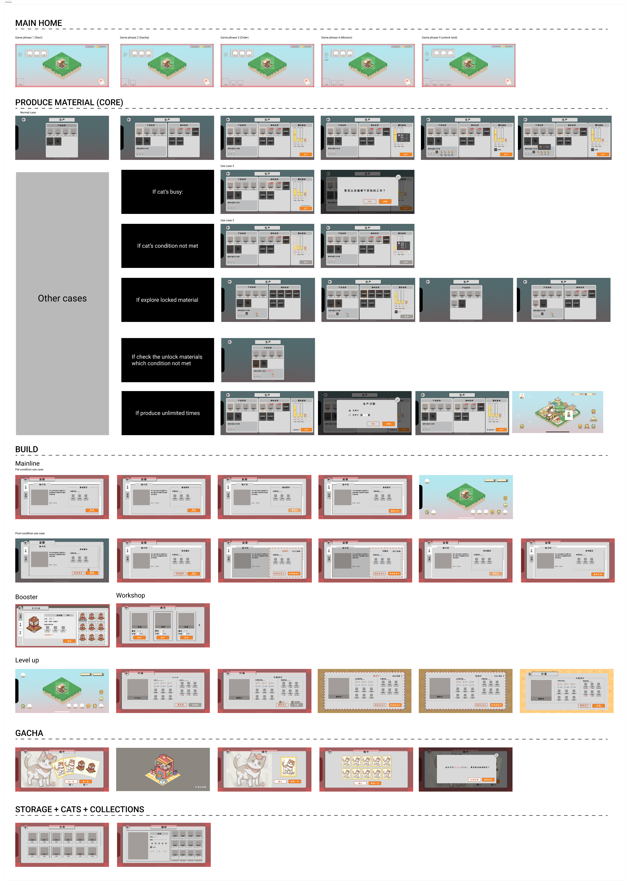
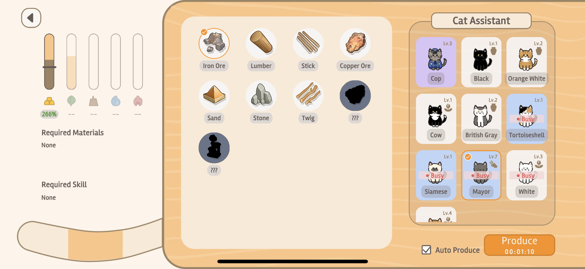
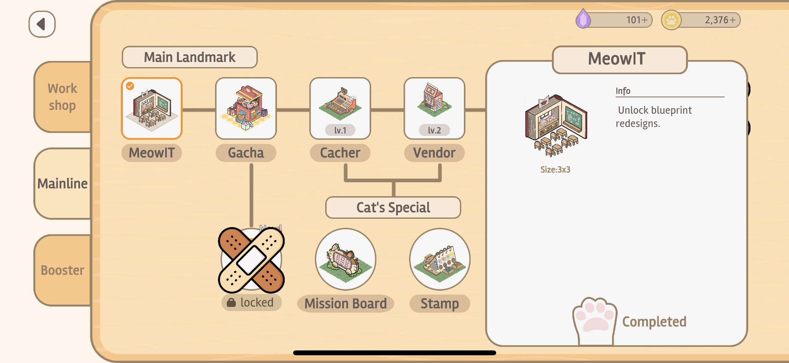
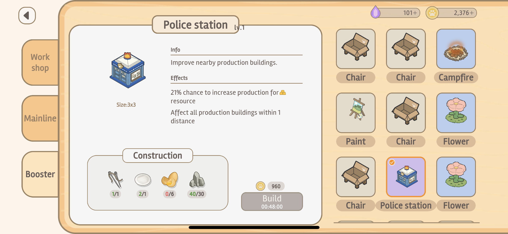
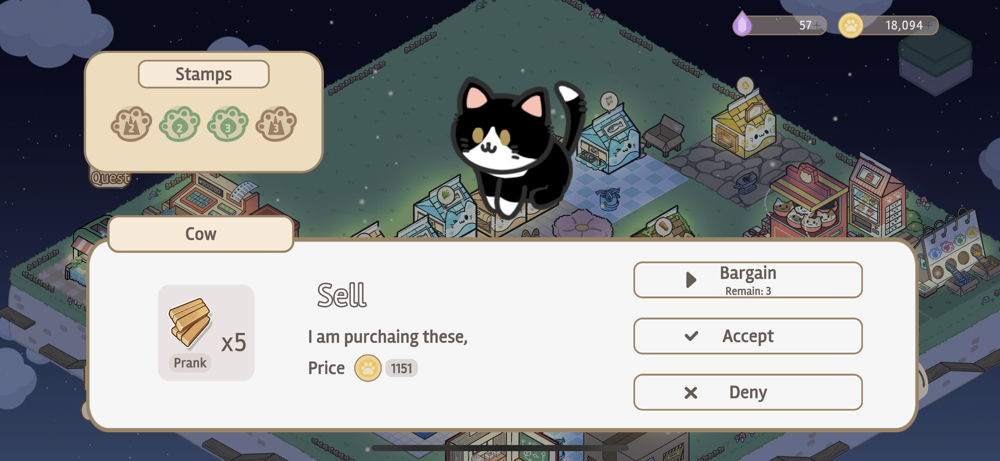
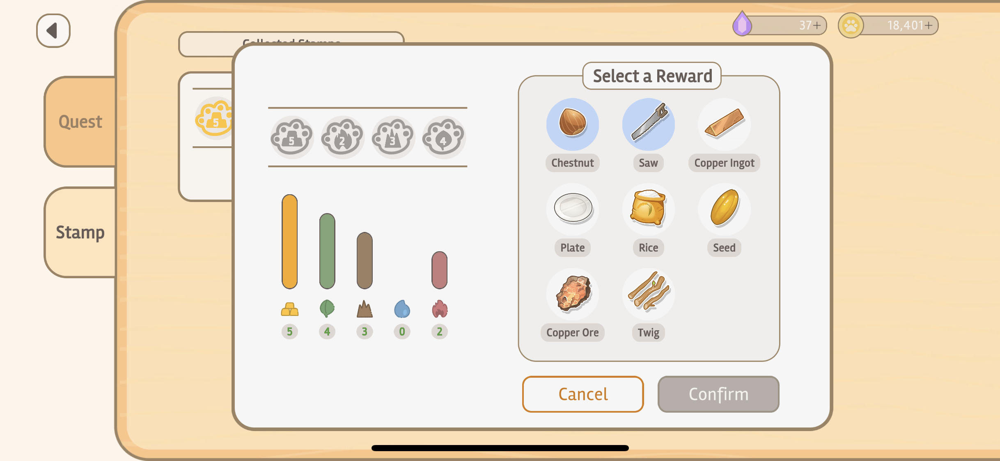
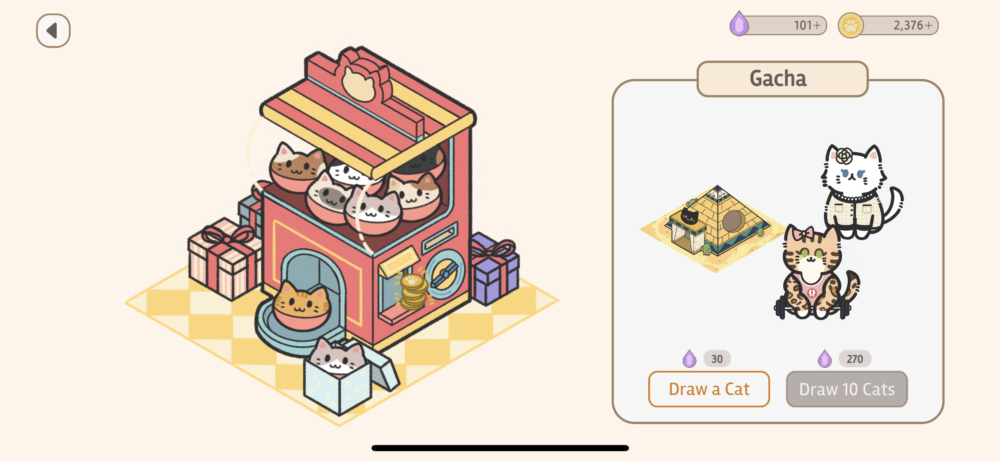
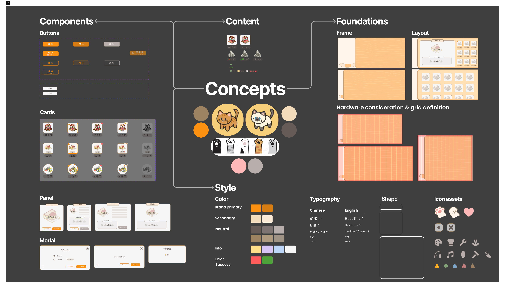

A world to build.
A way to begin.
Bringing gameplay, player journeys, and a consistent visual language together in a world for achievers and explorers.
- Design work
- Game UX/UI, interaction & visual design
- Platform
- iOS & Android
- Started
From the source portfolio- Documented stage
- Alpha testing

01 / Context
Two kinds of player.
One coherent world.
Cattia is a mobile simulation game framed around achievers and explorers: people who want to make progress, and people who want to discover what the world holds.
The source portfolio describes five game mechanisms and more than ten features. Buildings, materials, quests, and cat interactions needed to feel like parts of one experience, rather than a collection of separate menus.
Make a growing game understandable without removing the depth that gives people reasons to keep exploring.
The project’s process map connects three layers: gameplay structure and storyline, end-to-end player flows, and an immersive visual system. This case follows those layers, then the feedback documented during alpha testing.
02 / Gameplay structure
Connect the mechanics
before connecting the screens.
The gameplay architecture maps how building activity, character interaction, and story progression depend on one another.
Buildings connect to production, recycling, leveling up, and cat stories. Character interactions open paths through tasks, stamps, work, and gifts. The mainline buildings also carry the main storyline, linking progression to the world rather than leaving it in a separate narrative layer.


Mapping these dependencies creates a shared reference for introducing a new feature or changing an existing one, without losing the connection to the rest of the game.
03 / Player experience
Design for the moments
that interrupt play.
The player-flow work goes beyond a successful production or building sequence. It also describes the conditions that stop those actions.
The wireframes include a busy cat, unmet cat conditions, locked materials, and materials whose unlock conditions are not yet met. Treating these as part of the core flow makes the limits of an action explicit, instead of leaving them as disconnected error states.


The later screens translate that structure into a shared interface language. Each example below is an original game screenshot; expand a screen to inspect its details.












04 / Visual system
A playful world.
A repeatable language.
The visual system brings components, content, and foundations together, from buttons and resource cards to layouts, typography, and device grids.
Warm panels, cat imagery, and expressive icons give the interface its character. Repeated button states, card structures, and modal treatments give different game mechanisms a common foundation.


Show the exchange, not just the sentence.
One visual exploration compares “45 coins for 3 stones” with icon-and-number arrangements of the same exchange. The aim is faster recognition with less reading; the source does not document a measured comprehension improvement.
Keep common elements consistent.
Resource quantities, character labels, navigation tabs, and repeated actions need recognizable treatments across production, quests, storage, and narrative panels. The component work gives those recurring elements a shared vocabulary.
05 / Alpha & learning
Early feedback.
Specific next steps.
The source reports an alpha test with 15 participants. Its summary says players liked the cute art style and understood the basics of what to do and how to play.
Art style & UI
Alpha rating reported in the source portfolio.Player satisfaction
Alpha rating reported in the source portfolio.The documented next steps were more specific than “make it easier”: improve on-land building interactions and the guidance for unlocking mysteries. The source also shows TestFlight iteration, keeping the story grounded in development and alpha feedback rather than a claimed public launch.
These are source-reported ratings from 15 participants. Test dates, recruitment details, the rating instrument, and raw responses were not supplied. They do not establish retention, commercial performance, or a production release; the project’s current status is not verified.
Learning from the source
Test, learn, retry—and keep the persistence that makes an independent game possible.
Adapted from the original reflection on resilience, iteration, and sustaining the project.
Sources and scope notes
Adapted from the Cattia game sequence on the supplied Appendix page. The source dates the project from November 2022 and documents interaction and visual design. Historical “present” wording is not used to verify current activity.
- Original Appendix page
- Project framing, platforms, and timeframe
- Process overview
- Gameplay architecture and player flows
- Original game screens
- Design system, visual exploration, and component consistency
- Alpha feedback and next steps
All ten images are local source assets, not flattened presentation slides. The selected gameplay images are static PNGs; no gameplay animation is fabricated. Source links may require Figma access. Public-sharing permissions still need review.
Next case / Toast